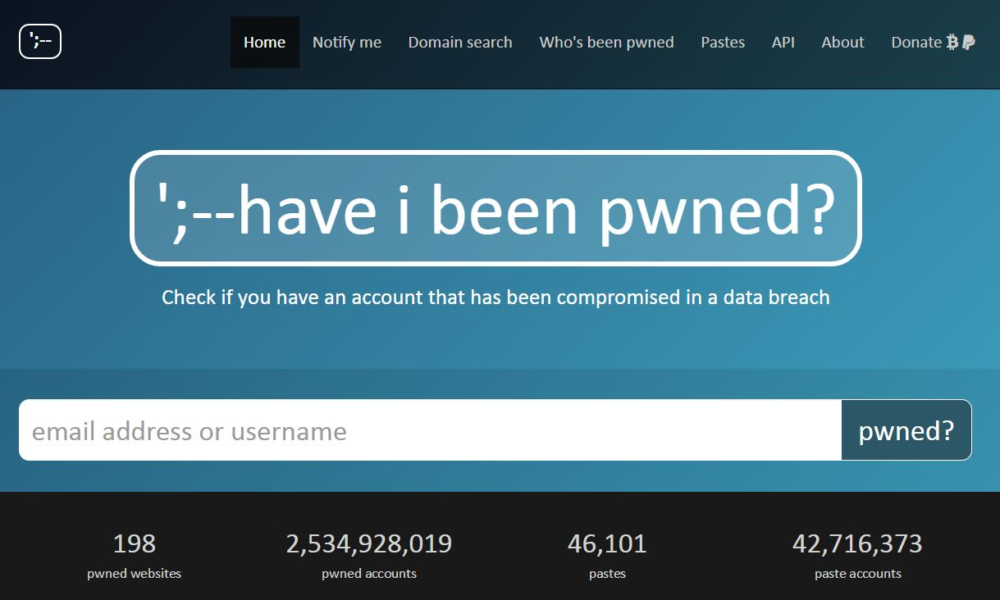
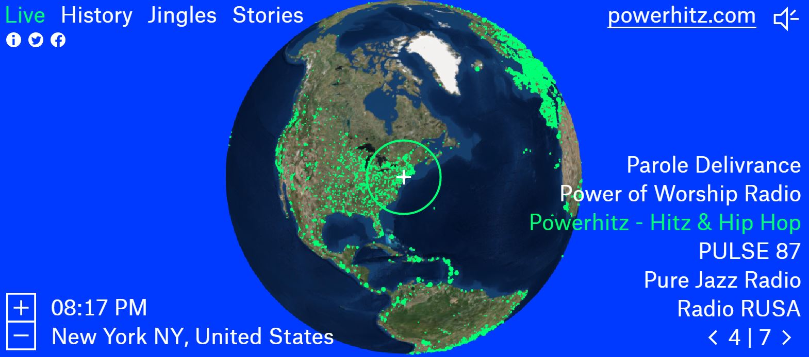

Have I Been Pwned?
This site checks to see if your email or username has been compromised in
a data breach. Some websites that you sign up for could illegally given out your email, address, password,and/or credit cards, or
have been hacked by a third party. It's very useful to know and has a nice layout for a website. It's very simplistic and
makes it very easy to use.

Radio Garden
On this website you can listen to any radio station in the
world. From live to jingles, you listen to multiple station from one area. It even shows you the radio station's website if
you're interested in viewing more information.